Home / MLT / Week 2 / Real questions
MLT week 2 - real exam questions
23 questions pulled from past papers whose wording matches this week's topics, newest first, duplicates removed. Pick your answers, then press Check answers. Figures and answer keys are the originals.
Elapsed 00:00
Which of the following statements correctly distinguishes the hard-margin SVM from the soft-margin SVM?
- The hard-margin SVM has a feasible solution only when the training data is linearly separable, whereas the soft-margin SVM always has a feasible solution.
- The hard-margin SVM allows some training points to violate the margin, whereas the soft-margin SVM forbids all margin violations.
- Increasing the regularisation parameter
 in the soft-margin SVM makes it behave less like the hard-margin SVM.
in the soft-margin SVM makes it behave less like the hard-margin SVM. - Unlike the hard-margin SVM, the soft-margin SVM can only be used with non- linear kernels.
Consider a binary classification problem in  with positive examples
with positive examples  and negative examples
and negative examples  . Apply the feature map
. Apply the feature map  and a linear model
and a linear model  . Which of the following weight vectors
. Which of the following weight vectors  gives a maximum-margin decision surface separating the two classes?
gives a maximum-margin decision surface separating the two classes?
with positive examples and negative examples . Apply the feature map and a linear model . Which of the following weight vectors gives a maximum-margin decision surface separating the two classes?


Consider binary classification on input features  . Define the decision boundary of a trained classifier as the set of points at which its predicted label changes. For which of the following method(s) can this decision boundary be non-linear in
. Define the decision boundary of a trained classifier as the set of points at which its predicted label changes. For which of the following method(s) can this decision boundary be non-linear in  ?
?
. Define the decision boundary of a trained classifier as the set of points at which its predicted label changes. For which of the following method(s) can this decision boundary be non-linear in ?- Perceptron.
- Logistic regression, predicting the positive class when
 .
.  -nearest-neighbour with Euclidean distance.
-nearest-neighbour with Euclidean distance.- A decision tree using axis-aligned splits.
- Gaussian Naïve Bayes in which the class-conditional feature variances differ between the two classes.
- A support vector machine with a linear kernel.
- A support vector machine with an RBF (Gaussian) kernel.
Consider the following kernel function defined for scalar inputs  :
:  Which of the following feature maps
Which of the following feature maps  satisfies
satisfies  for all ?
for all ?
: Which of the following feature maps satisfies for all ?


Assume that
 are valid (positive semi-definite) kernels. Which of the following are
are valid (positive semi-definite) kernels. Which of the following are  valid kernels?
valid kernels?
are valid (positive semi-definite) kernels. Which of the following are valid kernels?


Consider a dataset for a binary classification problem with features in  as shown in the figure. The red points belong to class
as shown in the figure. The red points belong to class  . Which of the following classifiers is the most appropriate choice?
. Which of the following classifiers is the most appropriate choice?
as shown in the figure. The red points belong to class 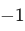
while the green points belong to class . Which of the following classifiers is the most appropriate choice?
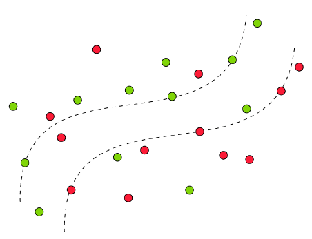
- Hard-margin, Linear SVM
- Hard-margin, Kernel SVM, with a suitable kernel
- Soft-margin, Linear SVM
- Soft-margin, Kernel SVM, with a suitable kernel
Consider a polynomial kernel,  of degree . Let
of degree . Let
of degree . Let 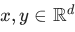
. Which of the following is/are true?- If is an even number, then
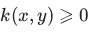
for all . - If
 and
and  are orthogonal, then
are orthogonal, then 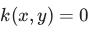
. 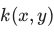
can never be zero.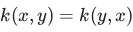
for all .
Let the linear regression model's solution be written as  , where
, where  . Let be a valid kernel function. What will be the prediction for an unseen data point
. Let be a valid kernel function. What will be the prediction for an unseen data point  ?
?
, where . Let be a valid kernel function. What will be the prediction for an unseen data point ?


Consider a polynomial kernel of degree
 on a feature space of dimension
on a feature space of dimension
 . How many features will the transformed space have
. How many features will the transformed space have

on a feature space of dimension
. How many features will the transformed space have
Consider the Gaussian kernel,
 with
with
 . Compute the value of
. Compute the value of
 and enter your answer correct to two decimal places.
and enter your answer correct to two decimal places.
with
. Compute the value of
and enter your answer correct to two decimal places.Comprehension passage for this question
Answer true or false for the given subquestions.If
 and
and
 are valid kernels, then
are valid kernels, then
 is also a valid kernel.
is also a valid kernel.
and
are valid kernels, then
is also a valid kernel.- True
- False
For the polynomial kernel
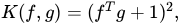
the explicit feature map for the vector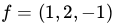
is 10-dimensional. Which of the following options is the correct transformed feature vector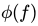
?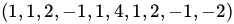
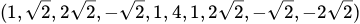
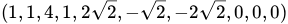
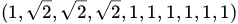
Which of the following are valid kernel functions? Select all that apply.


- Kernel PCA with a polynomial kernel of degree 2.
- Kernel PCA with a polynomial kernel of degree 3.
- Kernel PCA with a polynomial kernel of degree 4.
- Standard PCA
Which of the following statements correctly differentiates PCA and Kernel PCA?
- PCA maximizes variance in the original feature space, while Kernel PCAmaximizes variance in a higher-dimensional transformed space.
- PCA finds principal components using linear transformations in the originalspace, while Kernel PCA uses non-linear transformations to find principal components in a higher-dimensional space.
- Kernel PCA can capture non-linear patterns in data, making it useful when PCAfails to represent complex structures in a linear space.
- PCA and Kernel PCA always yield identical results regardless of the datasetstructure.

- Both k1 and k2 are valid kernels.
- k1 is a valid kernel, but k2 is not a valid kernel.
- k2 is a valid kernel, but k1 is not a valid kernel.
- Neither k1 nor k2 is a valid kernel.
Kernel PCA with a polynomial kernel of degree 3 is run on a dataset of 100 data-points. Let ϕ be the transformation corresponding to this kernel. If the largest eigenvalue of the centered kernel matrix is 10, find the largest eigenvalue of the covariance matrix of the transformed dataset, where ϕ is used to effect the transformation.
Which of the following statements accurately describes the characteristics of kernel functions? Assume the dataset to be mean-centered.
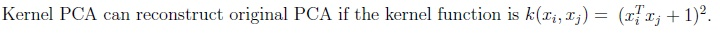
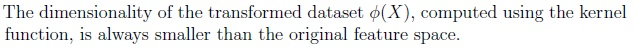
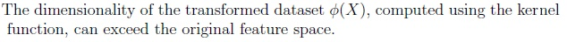
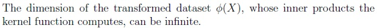
Which of the following are true about the kernel function? Assume that the dataset X is mean centered.


Consider a dataset consisting of 1000 samples in a 20-dimensional space. You apply Kernel PCA with a polynomial kernel of degree 3 to reduce the dimensionality of the data. Which of the following statements regarding Kernel PCA is true?
- Kernel PCA always results in a lower-dimensional representation of the datacompared to standard PCA.
- Kernel PCA can only be applied to datasets that are linearly separable.
- Choosing a higher degree polynomial kernel in Kernel PCA can lead toincreased flexibility in capturing non-linear relationships.
- None of these.
Comprehension passage for this question


- The kernel regression is parametric
- The kernel regression is non-parametric
- The Kernel matrix K is positive semi-definite
- In general, Kernel regression is computationally expensive than a simple linearregression
Which of the following statements about kernel PCA is/are always true?


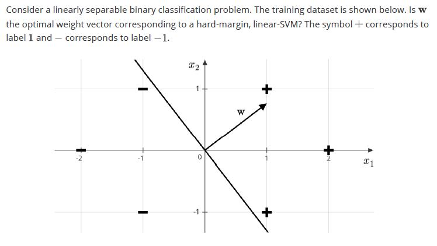
- w shown in this diagram is the optimal weight vector for a hard-margin, linear-SVM
- w shown in this diagram is not the optimal weight vector for a hard-margin,linear-SVM